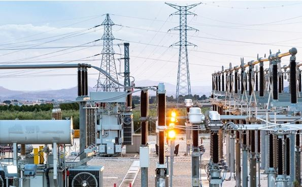

Electrical Engineer
Location: Akosombo, Eastern Region
Type: Full-time
Description: Design, develop, and maintain electrical systems for hydro and thermal power plants. Ensure safety compliance and efficient energy transmission.
- Bachelor's degree in Electrical Engineering or related field.
- 5+ years experience in power systems.
- Strong analytical and problem-solving skills.
- Knowledge of Ghana’s energy regulations.
Apply Now
Environmental Officer
Location: Tema, Greater Accra Region
Type: Full-time
Description: Monitor and ensure compliance with environmental policies, conduct impact assessments, and implement sustainability initiatives across projects.
- Degree in Environmental Science or related discipline.
- Experience with environmental management systems.
- Excellent communication and report writing skills.
- Ability to work with diverse stakeholders.
Apply Now

Maintenance Technician
Location: Kpong, Eastern Region
Type: Full-time
Description: Perform routine maintenance and repair of machinery and electrical equipment at hydroelectric power stations.
- Technical diploma or equivalent.
- Experience with industrial machinery maintenance.
- Strong troubleshooting skills.
- Ability to work in team environments.
Apply Now